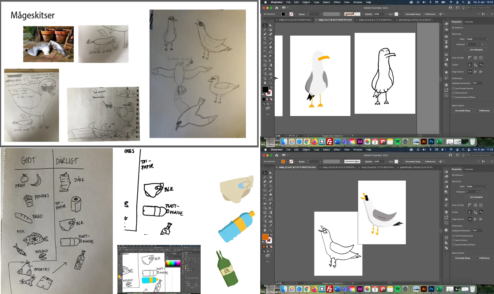
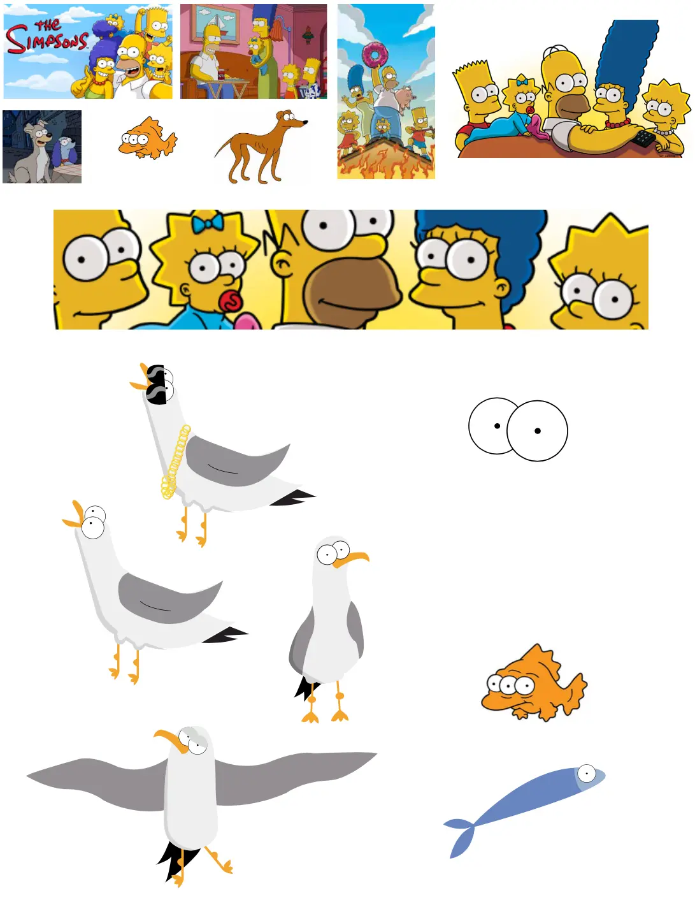
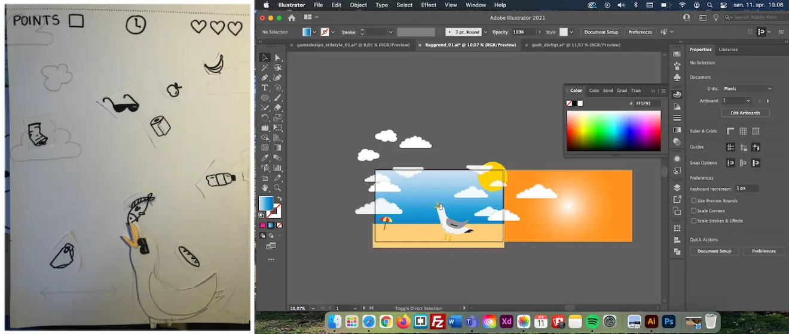
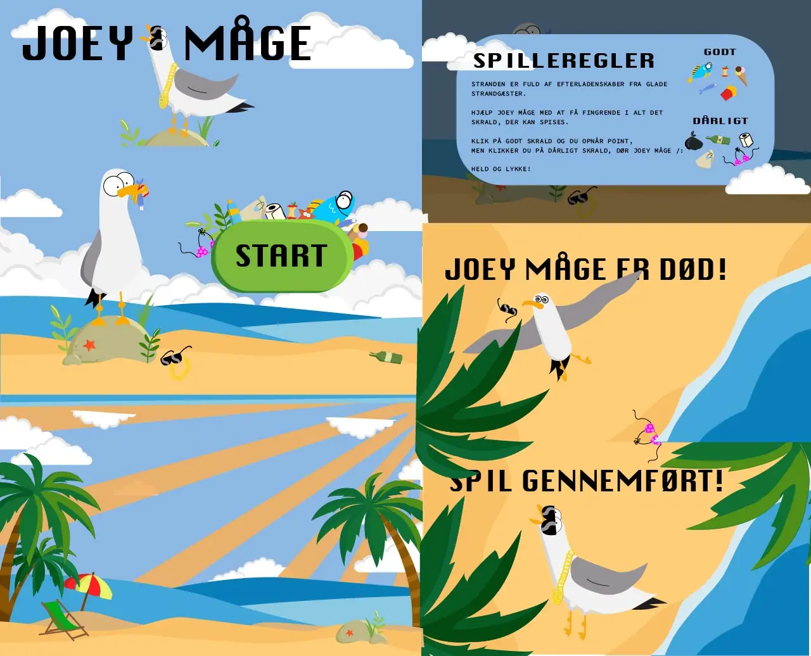
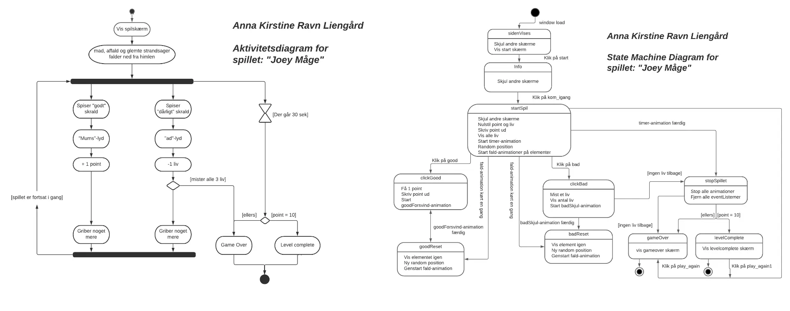
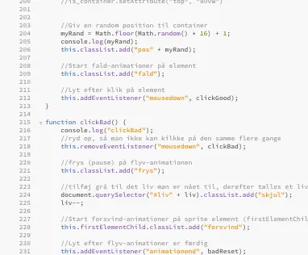
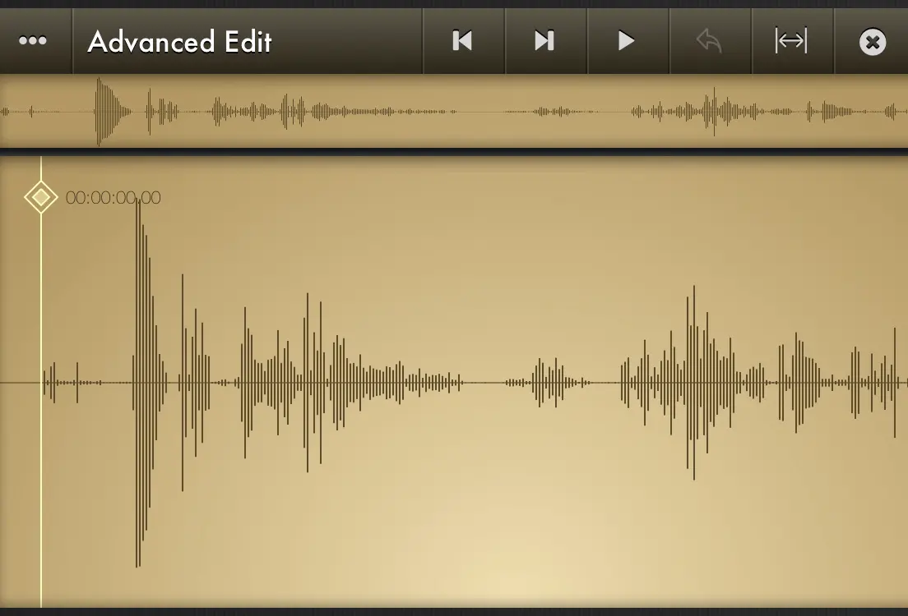

Tema 4 - Animation
Prøv spillet, jeg udviklede under tema 4: "Animation": Joey Måge
Jeg legede med flere forskellige spilideer bl.a. ved brug af en krydsmetode, og endte med at få lyst til at tegne en måge.
Jeg udvalgte, fotograferede og optegnede mågerne i photoshop og illustrator, og ud fra inspiration i The Simpsons, færdigtegnede jeg alle spilelementerne. Særligt med fokus på de store, intense øjne fra Simpsonkaraktererne. De resterende spilelementer kan findes i assetlisten på min spil-hjemmeside. 
Efter at have skitseret og færdigtegnet mågen i vector i den stil jeg ville have den i, lavede jeg en paperprototype af spillet. Jeg har forsøgt at dokumentere lidt af min proces fra en rå skitse og prototype til de første streger og ideer i illustrator. 
Ideerne og skitsterne var under stor udvikling og jeg prøvede mange forskellige ideer af. Her et sammenklip af de færdige baggrunde, jeg brugte til mit spil. Illustrator gik fra at være et nyt program i mit repetoire, jeg gik fra at hade til at elske.
Til selve kodningen af spillet, måtte jeg først planlægge spillets regler og pointsystem, hvilket jeg optegnede vha. et aktivitetsdiagram og et State Machine diagram.
Spillet kodede jeg i html og css og fik dertil kendskab til animationer i css samt programeringssproget javascript, for at få spilelementerne til at bevæge sig yderligere og for at skabe dynamik og interaktivitet.
Jeg tilføjede lydeffekter i form af selvindspillede lyde via appen "Voice Record", til når man klikker på "dårligt" og "godt" skrald i spillet. Disse optagelser lavede jeg støjreduktion på, klippede og konverterede fra wav- til mp4-filer i Audition.

Både i starten og i slutningen af spiludviklingsprocessen lavede jeg
nogle brugercentrerede test, som skulle hjælpe mig til at gøre
brugeroplevelsen god. Til start blev det en kvalitativ "digital
fernisering", hvor jeg og én anden gav peer to peer feedback på
hinandens paperprototyper. Her noterede jeg mig nogle ændringer,
bl.a. at skrald som dåser og ølflasker skulle med i spillet.
I slutningen af spillet brugte vi samme testmetode, hvor jeg fik
kommentarer som "fint og gennemført design", men at spillet var lidt
svært, pga. hasitgheden på de faldende elemener. Dette tilrettede
jeg, og testede kvalitativt gennem en survey, som blev besvaret af
syv testpersoner, der også selv havde designet og programeret et
spil.
- Opnåede læringsmål og metoder:
Under forløbet med animation har jeg opnået viden, færdigheder og kompetencer inden for koncept- og ideudvikling, formgivning af grafiske elementer, at analysere spildesign med øje på UI-elementer, figurelementer, baggrundsdesign samt lært om formgivnings- og kompositionsteknikker.
Jeg har lært at animere i css, samt skabe et dynamisk og interaktivt slow gennem arbejdet med programerings-sproget javascript. Desuden fået kendskab til digitaleudvekslingsformaterne mp3, wav, svg og aiff, som man bruger i digital medieproduktion. Arbejdet med lydoptagelse, redigering og støjreduktion på lydfiler i Audition og i appen Voice Recorder.
Sidst men ikke mindst har jeg foretaget to forskellige brugercentrerede metoder til test på det færdige spil med blik på design og løsning. Både en kvalitativ test i form af peer-to-peer-review på både paperprototype samt færdigt design og løsning. Dernæst en kvantitativ test i form af et spørgeskema, som ligesom den kvalitative test gav mig et godt indtryk af hvordan brugeroplevelsen af spillet var, og hvilke eventuelle ændringer der skulle laves.